Keturių dienų kelionė į Kopenhagą — iš Kauno skrendame penktadienio rytą, grįžtame pirmadienio vakare. Automobilio nenuomojame: visą kelionę keliausime pėsčiomis ir viešuoju transportu (metro, autobusai, Havnebus vandens kelias).
Maršrutas: pirmą dieną — Christianshavn ir Nyhavn, antrą — karališkieji rūmai, kanalų plaukimas ir Reffen gatvės maistas, trečią — senamiestis, Tivoli ir vakare Deep Purple koncertas Royal Arenoje, ketvirtą — ramus rytas Frederiksberg parke prieš skrydį namo. Nakvojame apartamentuose su kanalo vaizdu Sydhavnen rajone.
🏠 Nakvynė
Apartment with canal view
📍 Kenny Drews Vej 37, 2450 København, Danija (Sluseholmen / Sydhavnen rajonas)
Apartamentai su kanalo vaizdu įsikūrę Kopenhagoje, Zelandijos regione, su terasa. Iš jų atsiveria ežero ir sodo vaizdas, yra nemokama vieta automobiliui vietoje ir nemokamas belaidis internetas — patogu keturiems keliautojams, nors verta iš anksto patikrinti lovų skaičių, nes yra 1 miegamasis ir svetainė.
Booking.com 🔎 Booking.com: 2026-10-23–2026-10-26, 4 žm.
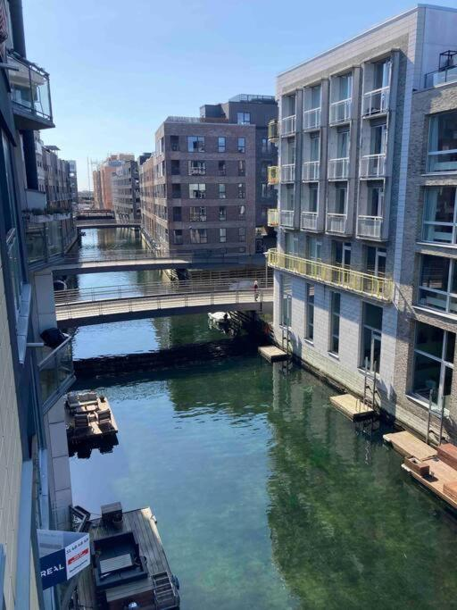
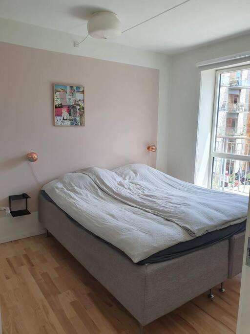
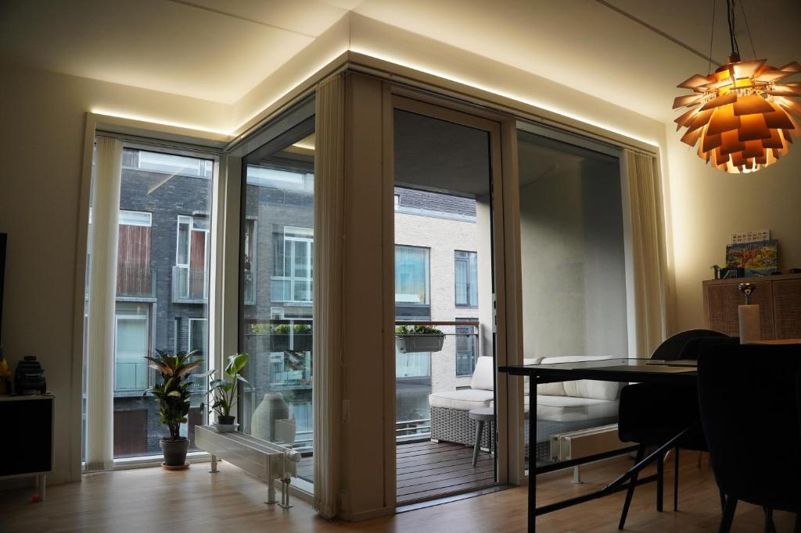
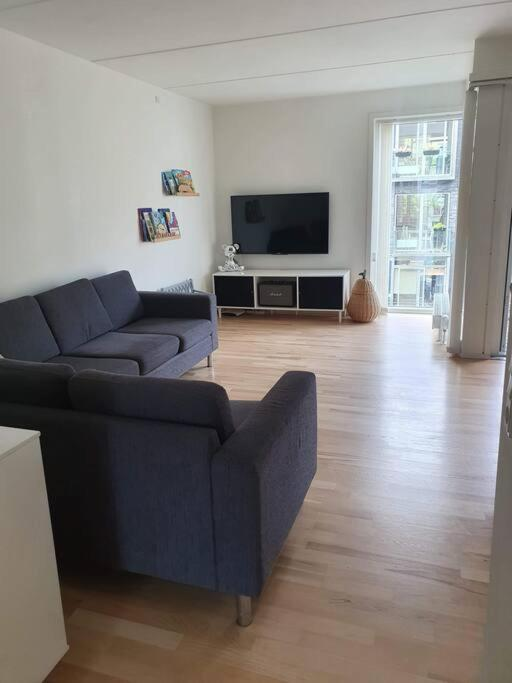
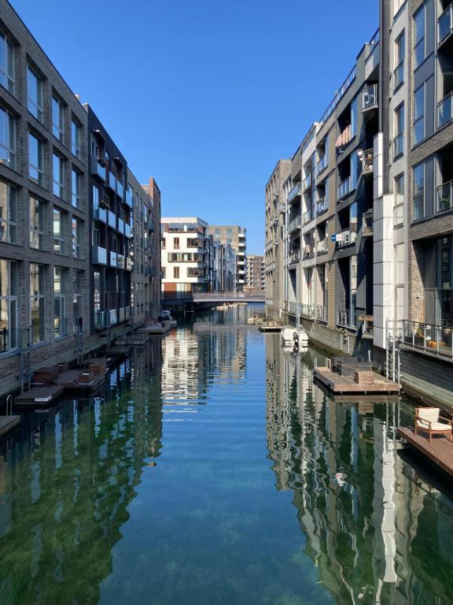
Nuotraukos: Booking.com
🗓️ Dienos
1 diena · 2026-10-23, penktadienis · Atvykimas ir Christianshavn

Nuotrauka: kallerna, CC BY-SA 4.0, šaltinis

Nuotrauka: Acediscovery, CC BY 4.0, šaltinis
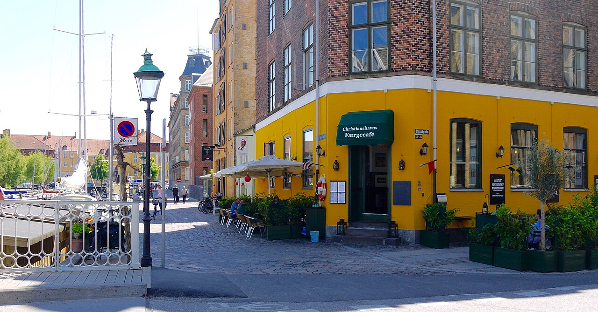
Nuotrauka: Marie Thérèse Hébert & Jean Robert Thibault, CC BY-SA 2.0, šaltinis

Nuotrauka: Dietmar Rabich, CC BY-SA 4.0, šaltinis

Nuotrauka: Dietmar Rabich, CC BY-SA 4.0, šaltinis

Nuotrauka: Jorge Franganillo, CC BY 2.0, šaltinis
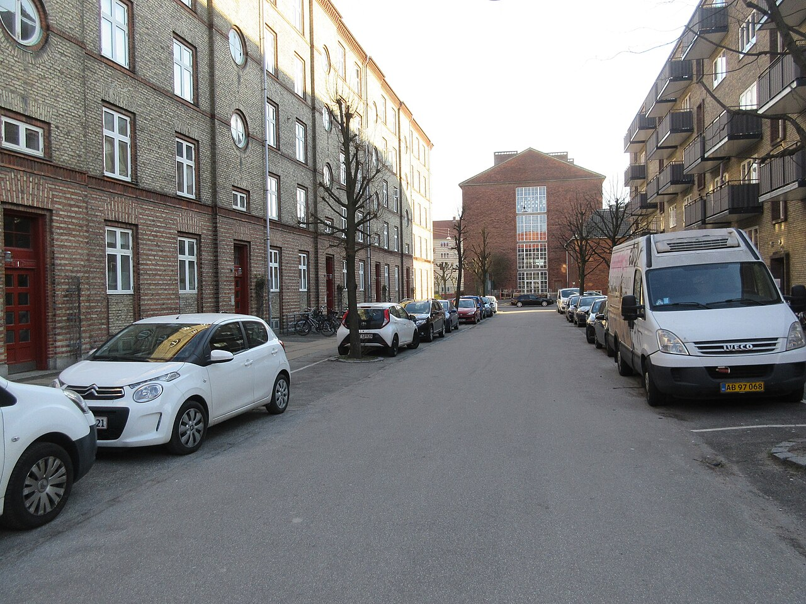
Nuotrauka: Ramblersen2, CC BY-SA 4.0, šaltinis
🌧 Planas B (jei blogas oras)
Dėl ko reikia: Vor Frelsers Kirke bokšto išoriniai sraigtiniai laiptai vėjuotu/lietingu oru paprastai uždaromi, o Nyhavn pakrantės pasivaikščiojimas lietuje praranda prasmę.
Alternatyva: Vidaus muziejų diena vietoj bokšto lipimo ir Nyhavn pasivaikščiojimo.
🧭 Plano B maršrutas Google Maps🕒 Viso susisiekimo laikas: ~37 min.
💡 Patarimas: Designmuseum Danmark dirba 10:00–18:00, bilietas apie 140 DKK, iki 18 m. nemokamai — pirkite internetu iš anksto, kad lietingą dieną nereikėtų stovėti eilėje.
2 diena · 2026-10-24, šeštadienis · Karališkoji Kopenhaga, kanalai ir Reffen

Nuotrauka: Neptuul, CC BY-SA 4.0, šaltinis

Nuotrauka: Jakub Hałun, CC BY-SA 4.0, šaltinis

Nuotrauka: Jebulon, CC0, šaltinis

Nuotrauka: Kritzolina, CC BY-SA 4.0, šaltinis
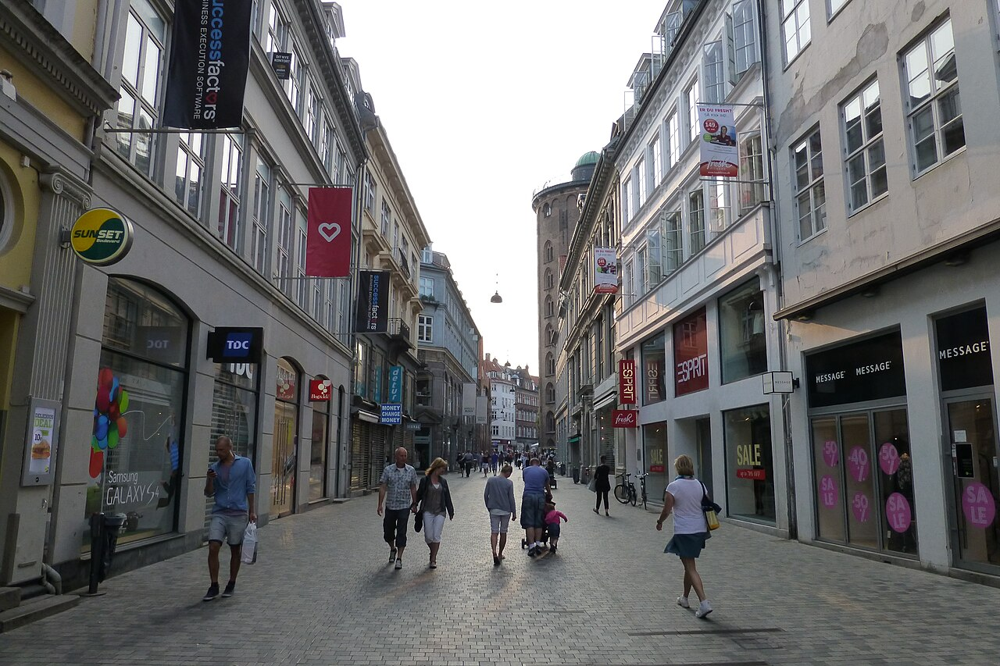
Nuotrauka: Aram Zucker-Scharff, CC BY 2.0, šaltinis

Nuotrauka: Dietmar Rabich, CC BY-SA 4.0, šaltinis

Nuotrauka: Turaids, CC BY-SA 4.0, šaltinis
🌧 Planas B (jei blogas oras)
Dėl ko reikia: Strøget pasivaikščiojimas lauke, Amalienborgo kiemo stebėjimas ir atviros valties kanalų ekskursija kenčia nuo vėjo/lietaus; Reffen lauko aikštelė šaltu lietingu vakaru nepatogi.
Alternatyva: Muziejų ir vidaus prekybos centro diena vietoj Strøget pasivaikščiojimo ir kanalų plaukimo.
🧭 Plano B maršrutas Google Maps🕒 Viso susisiekimo laikas: ~37 min.
💡 Patarimas: SMK nuolatinė ekspozicija nemokama, atvira iki 18:00 — geras, nemokamas prieglobstis nuo lietaus po pietų.
3 diena · 2026-10-25, sekmadienis · Senamiestis, Tivoli ir Deep Purple koncertas
⏰ Naktį į sekmadienį laikrodžiai pasukami į žiemos laiką (2026-10-25, 03:00) — naktis bus viena valanda ilgesnė, patikrinkite, ar telefonas atsinaujina automatiškai.

Nuotrauka: Moahim, CC BY-SA 4.0, šaltinis

Nuotrauka: Richard Mortel, CC BY 2.0, šaltinis

Nuotrauka: Richard Mortel, CC BY 2.0, šaltinis

Nuotrauka: Jakub Hałun, CC BY-SA 4.0, šaltinis

Nuotrauka: Leif Jørgensen, CC BY-SA 4.0, šaltinis

Nuotrauka: Jenny Andersson / News Oresund, CC BY 2.0, šaltinis
🌧 Planas B (jei blogas oras)
Dėl ko reikia: Tivoli lunaparko atrakcionai lauke stiprios audros metu (vėjas iki 56 km/h, gausus lietus) paprastai uždaromi saugumo sumetimais.
Alternatyva: Nationalmuseet vietoj Tivoli dėl audros.
🧭 Plano B maršrutas Google Maps🕒 Viso susisiekimo laikas: ~20 min.
💡 Patarimas: Nationalmuseet sekmadienį atvira 10:00–17:00, bilietas apie 150 DKK (nuolatinė ekspozicija kartais nemokama — patikrinkite prie kasos), vos 10 min pėsčiomis nuo Glyptoteko.
4 diena · 2026-10-26, pirmadienis · Frederiksberg parkas ir skrydis namo
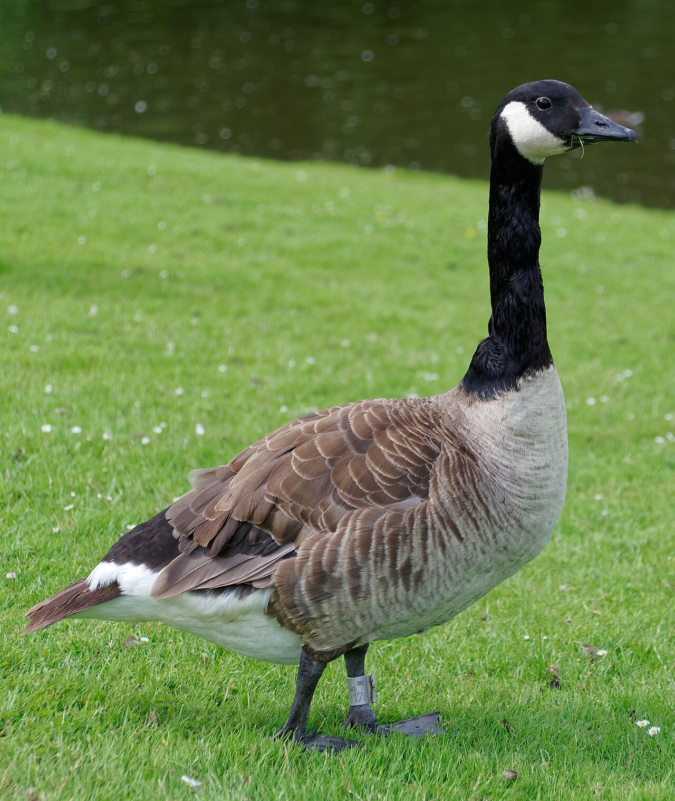
Nuotrauka: Jakub Hałun, CC BY-SA 4.0, šaltinis

Nuotrauka: Ramblersen2, CC BY-SA 4.0, šaltinis
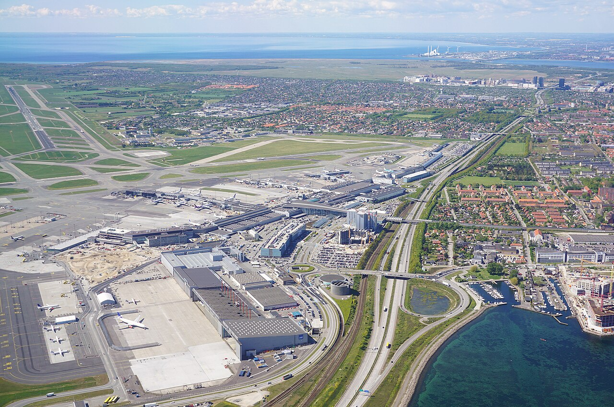
Nuotrauka: kallerna, CC BY-SA 4.0, šaltinis

Nuotrauka: kallerna, CC BY-SA 4.0, šaltinis

Nuotrauka: kallerna, CC BY-SA 4.0, šaltinis
🗺️ Žemėlapis
💶 Biudžeto suvestinė
4 keliautojai, 3 nakvynės. Skrydžiai patvirtinti realia paieška (2026-10-21); nakvynė ir koncertas — pagal keliautojo rezervaciją; maistas ir bilietai — įvertinti pagal konkrečias plane nurodytas vietas.
| Kategorija | Min | Tikėtina | Maks |
|---|---|---|---|
| Skrydžiai (4 žm.) | 517 € | 650 € | 950 € |
| Automobilio nuoma | 0 € | 0 € | 0 € |
| Nakvynė (3 naktys) | 780 € | 780 € | 780 € |
| Maistas (4 žm., 4 d.) | 550 € | 672 € | 850 € |
| Bilietai + Deep Purple koncertas | 800 € | 946 € | 1050 € |
| Kuras | 0 € | 0 € | 0 € |
| Iš viso (4 žm.) | 2647 € | 3048 € | 3630 € |
| Vienam asmeniui | 662 € | 762 € | 908 € |
- Skrydžių kaina (517 € už 4 žmones) neapima bagažo — jį reikia priskaičiuoti papildomai.
- Įėjimo bilietų kainos paimtos iš lankytinų vietų aprašymų (DKK→€) — patikrinkite prieš kelionę, nes iki jos liko vos kelios dienos.
- Kelionės draudimas, asmeninės išlaidos ir dovanos šiame skaičiavime neįtraukti.
ℹ️ Praktinė informacija
- 📄 Dokumentai: galiojantis pasas arba asmens tapatybės kortelė — Danija yra Šengeno zona, ES piliečiams viza nereikalinga, iki 90 dienų.
- 💳 Pinigai: Danijos krona (DKK), ne euro — Danija yra ES, bet ne euro zonoje. Kortelės priimamos praktiškai visur, bet pasiimkite ir grynųjų — Christianijoje bankomatų mažai, kai kurie maisto kioskeliai priima tik grynuosius.
- 🙏 Arbatpinigiai: nebūtini — paslauga įskaičiuota į sąskaitas. Galima palikti ~10% tik už išskirtinį aptarnavimą.
- 🏥 Sveikata: pasiimkite Europos sveikatos draudimo kortelę (EHIC) nemokamam/sumažintam gydymui kaip ES piliečiui.
- 🚨 Pagalbos telefonas: 112 (policija/gaisrinė/greitoji, skambutis nemokamas). Nemedicininės konsultacijos: 1813.
- 🚇 Viešojo transporto bilietai: Rejsebillet programėlė (keičia senąją DOT Billetter programėlę) arba stotelės automatas; intensyviam lankymui verta City Pass Small (1–4 zonos, 24 val.).
- 🚲 Papročiai: danai vertina punktualumą ir eiles; dviračių takai (cykelsti) yra rimtas dalykas — niekada nevaikščiokite juo, vietiniai gali supykti ar net partrenkti.
- 🛡️ Saugumas: Kopenhaga paprastai labai saugi; įprastos miesto atsargumo priemonės (saugoti daiktus Nyhavn/Strøget). Christiania saugi dienos metu, vakare venkite, Pusher Street zonoje nuotraukų nedarykite.
💡 Kelionės patarimai
- Pirmą dieną iš oro uosto patogiausia iškart M2 metro linija pasiekti Christianshavn ir Vor Frelsers Kirke – tiesioginis traukinys, persėdinėti nereikia.
- Apartamentai įsikūrę Sydhavnen rajone, kiek toliau nuo senamiesčio ir Christianshavn – kelias į visas lankytinas vietas ir oro uostą patogus ir asfaltuotas, tačiau skirkite papildomai 10–15 minučių kelionei autobusu, traukiniu ar metro.
- Šeštadienį po pasiplaukiojimo kanalais patogiausia iki Reffen plaukti Havnebusu tiesiai nuo Nyhavno prieplaukos – galioja tas pats bilietas kaip autobusui ar metro.
- Po šeštadienio Deep Purple koncerto Royal Arenoje (baigiasi apie 22:30) grįžtant į Sydhavnen, iš anksto pasitikrinkite vakarinio S-traukinio ar autobuso tvarkaraštį.
- Naktį iš šeštadienio į sekmadienį (spalio 24/25-osios naktis) laikrodžiai pasukami į žiemos laiką – naktis bus viena valanda ilgesnė, patikrinkite, ar telefonas atsinaujina automatiškai.
- Pirmadienį dauguma Kopenhagos muziejų uždaryti – ryto pasivaikščiojimui pasirinktas Frederiksberg Have parkas visada atviras ir nemokamas.
- Paskutinę dieną į oro uostą atvykstama apie 2,5 val. prieš skrydį – registracijai, bagažo pridavimui ir pietums laiko pakanka.
☁️ Orų prognozė
| Diena | Vieta | Oras | Temp. | Lietus | Vėjas |
|---|---|---|---|---|---|
| 2026-10-23 (Pt) | Kopenhaga | Dulksna | 10–12°C | 51% | iki 26 km/h |
| 2026-10-24 (Št) | Kopenhaga | Dulksna | 10–12°C | 55% | iki 33 km/h |
| 2026-10-25 (Sk) | Kopenhaga | Lietus | 9–12°C | 80% | iki 56 km/h |
| 2026-10-26 (Pr) | Kaunas | Dulksna | 9–12°C | 37% | iki 28 km/h |
Tai aktuali artimo laikotarpio prognozė (pateikta 2026-10-21). Trečiadienio oras rodo stiprų lietų ir vėją — tai dieną verta rinktis Plano B alternatyvą vidaus objektams.
🍽 Kur pavalgyti
1 diena
Nuo 1800-ųjų veikiantis pastatas Christianshavn pakrantėje, kur tarnauja tikrą danišką smørrebrød ir per 30 rūšių snapsų — autentiškiau nei turistinėse Nyhavn vietose.
Geriausiai vertinamas smørrebrød prekystalis visoje Torvehallerne turgavietėje — populiariausios: krevetės su kiaušiniu, silkė, kepenų paštetas.
Ekologiškas dešrainių kioskelis — greitas ir skanus užkandis tarp lankytinų vietų.
Vietinių mėgstama Vesterbro bodega su elnių galvomis ant sienų, smørrebrød ir danišku kasdienos meniu.
2 diena
Mažas, namudinio stiliaus vegetariškas/veganiškas kavinė Christianijos viduryje — tik grynieji, uždaryta pirmadieniais.
Vienas seniausių (1877 m.) ir labiausiai vertinamų smørrebrød restoranų Kopenhagoje.
Veikia nuo 1652 m. — garsėja sraigtiniu pyragaičiu (kanelsnegl), kurio trečiadieniais parduodama iki 4000 per dieną.
Didžiausias Šiaurės Europos gatvės maisto turgus senose konteinerių pastatuose prie vandens — per 40 prekystalių.
3 diena
Veikia nuo 1852 m. prie Frederiksholmo kanalo — žinoma dėl marinuotos silkės pagal slaptą receptą.
Pietūs tiesiog tarp palmių po muziejaus stiklo kupolu.
Greita ir patogi vakarienė prieš Deep Purple koncertą, vos per vieną metro stotelę nuo Royal Arena.
4 diena
Paskutiniai pietūs Danijoje po saugumo patikros — įvairūs greito maisto ir kavinių pasirinkimai 3 terminale.
🍸 Barai
Seniausias veikiantis baras Kopenhagoje, atidarytas 1723 m. — autentiškas senojo vyno rūsio interjeras prie Kongens Nytorv.
Kokteilių baras įsikūręs 1909 m. buvusioje Nimb rūmų balių salėje — didžiuliai kristaliniai sietynai ir židinys.
🍴 Ką paragauti
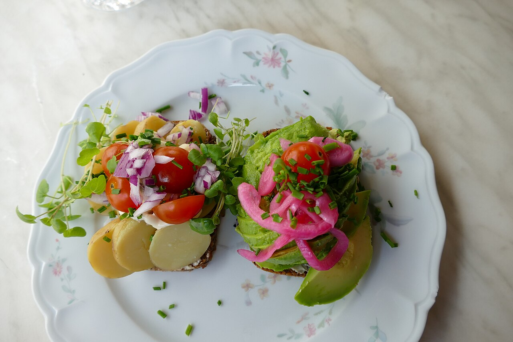
SmørrebrødDanijos nacionalinis patiekalas — plonai pjaustytos ruginės duonos riekelė su sviestu ir gausiu priedu viršuje (silke, krevetėmis, kiaulienos keptuku, kepenų paštetu ar jautienos kepsniu). Valgoma šakute ir peiliu.
7–20 € · Kur paragauti: Hallernes Smørrebrød, Restaurant Schønnemann, Kanal Cafeen, Christianshavns Færgecafé
Nuotrauka: Kritzolina, CC BY-SA 4.0, šaltinis
 Frikadelės
Frikadelės
Keptos kiaulienos ir jautienos maltinukai, patiekiami su virtomis bulvėmis, rudu padažu ir raudonaisiais kopūstais ar marinuotais burokėliais — klasikinis namų virtuvės patiekalas.
12–20 € · Kur paragauti: Café Dyrehaven, Christianshavns Færgecafé, Restaurant Schønnemann
Nuotrauka: cyclonebill, CC BY-SA 2.0, šaltinis
 Kepta kiaulienos pakraštė su petražolių padažu (Stegt flæsk med persillesovs)
Kepta kiaulienos pakraštė su petražolių padažu (Stegt flæsk med persillesovs)
2014 m. danų apklausoje išrinktas tautiniu patiekalu — traškiai keptos kiaulienos pakraštės riekelės su baltu petražolių padažu ir virtomis bulvėmis.
14–22 € · Kur paragauti: Kanal Cafeen, Christianshavns Færgecafé
Nuotrauka: XYZA-2400, CC0, šaltinis
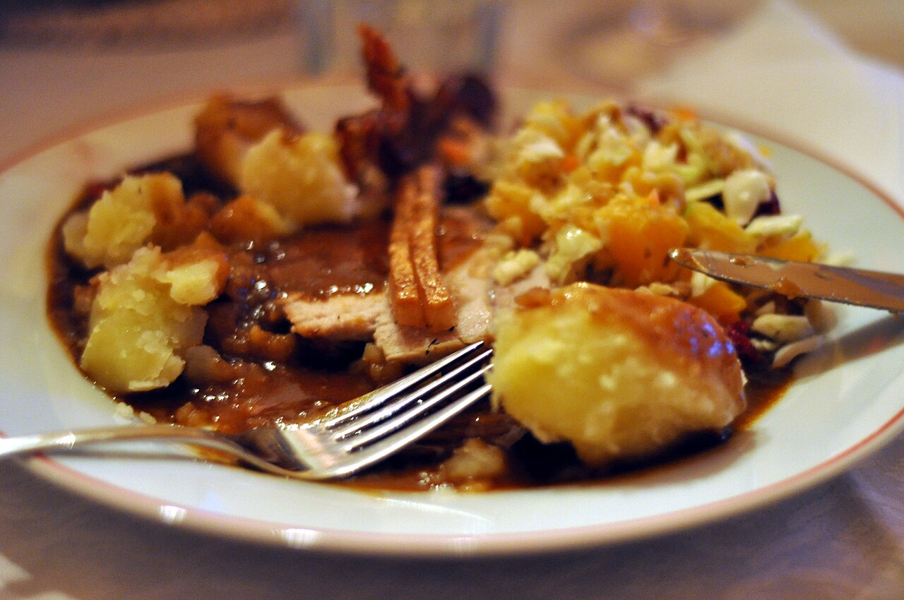
Kepta kiaulienos mentė su traškia odele (Flæskesteg)Sekmadienio ir švenčių kepsnys — kiaulienos mentė su kryžmai įpjauta ir labai traškia skrudinta odele, patiekiama su karameliniais bulvėmis ir raudonaisiais kopūstais.
16–26 € · Kur paragauti: Restaurant Schønnemann, Café Dyrehaven
Nuotrauka: cyclonebill, CC BY-SA 2.0, šaltinis
Gatvės maisto klasika nuo 1921 m. — skrudinta dešrelė bandelėje su garstyčiomis, kečupu, remulado padažu, svogūnais ir marinuotais agurkais ("med det hele" — "su visais priedais").
5–9 € · Kur paragauti: DØP – Den Økologiske Pølsemand
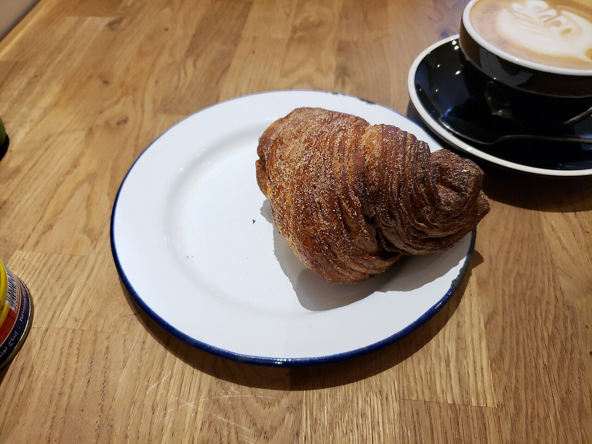
Sraigtinis pyragaitis (Kanelsnegl)Traškus, sviestingas mielinis pyragaitis su cinamono ir cukraus sluoksniais, susuktas sraigtės forma — populiariausias danų kavinės priedas prie kavos, geriausias dar šiltas.
3–6 € · Kur paragauti: Sankt Peders Bageri
Nuotrauka: Andy Li, CC0, šaltinis
🎒 Ką pasiimti
- Skysčiai rankiniame bagaže: tik ≤100 ml induose, visi sudėti į vieną 1 l skaidrų maišelį, peiliukų ir daugiafunkcių įrankių neimti.
- 3 dieną (10-25) numatytas stiprus lietus (80 %) ir vėjas iki 56 km/h – tą dieną planuojami vidaus objektai (Christiansborg, Glyptotek), tad striukė su gobtuvu svarbiau nei skėtis.
- Royal Arena koncertams dažnai taikomi kuprinių dydžio apribojimai – į Deep Purple koncertą geriau eiti su maža rankine, o didesnę kuprinę palikti apartamentuose.
- Visos 4 dienos vaikščiojama/važiuojama viešuoju transportu – rinktis patogią, jau pritrintą avalynę, ne naują.
Drabužiai
Avalynė
Apsauga nuo lietaus ir vėjo
Dokumentai ir pinigai
Elektronika
Higiena ir kelionės reikmenys
Kita / praktiška
✈️ Praktinė info kortelė
🚗 Automobilio grąžinimas: netaikoma — automobilis šiai kelionei nenuomojamas.
🛫 Skrydis iš Kauno: KUN 09:10 → CPH 09:40 (penktadienis, 2026-10-23)
🛬 Skrydis namo: CPH 15:15 → KUN 17:45 (pirmadienis, 2026-10-26)
📞 Kelionės kontaktas: _____________
📞 Pakeitimo/avarijos atveju skambinti: _____________
🚨 Vietinis pagalbos telefonas Danijoje: 112